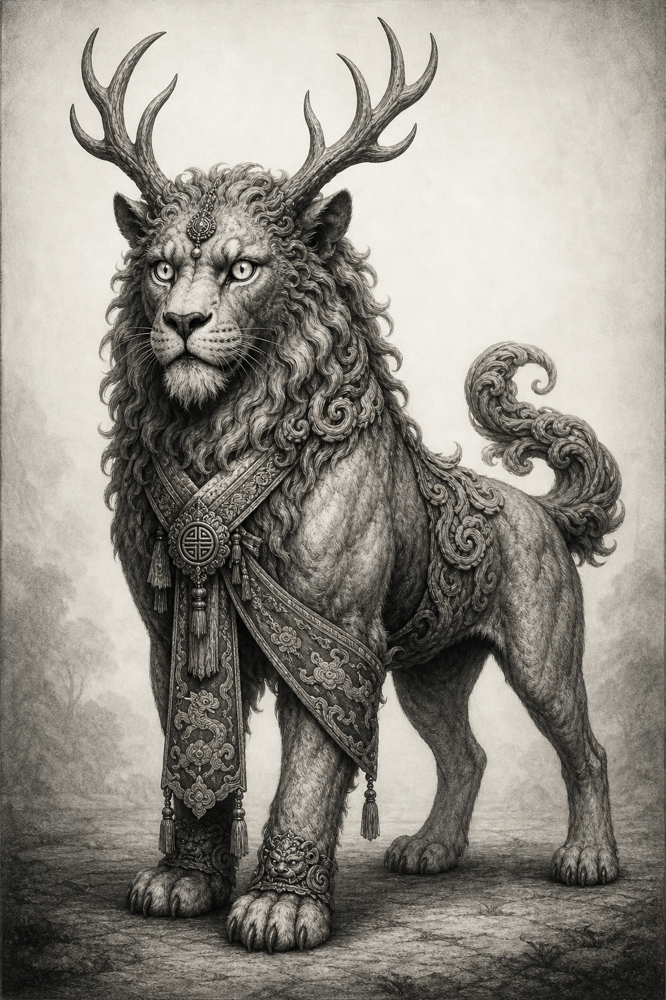

Standalone Reader Packet
FRH Sample Characters
A dedicated GitHub Pages-ready cast reader built from the promoted sample-character bundle. Every page keeps the long-form backstory and mechanics export, while the front door reads like the established FRH cast material.
Best use: start with the featured entry points if you want narrative onboarding, then open the individual character pages for the preserved mechanics exports and downloadable PDFs.
Special cases: Autafon, Edwin, and Joe Bob now each enter the cast as one lane with grouped sub-pages for their alternate builds or forms. Melody and Chuff still keep both individual pages and a shared relationship page.
Featured Entry Points

Melody and Chuff
Use the pair page as the soft-entry route: it frames Melody's glamour and Chuff's inhuman protection as one story before you split into individual sheets.

Autafon Amber Deliamber
Amber belongs on the cast page as one person, not four separate strangers. This group page gathers her core reader-facing identity and then lets you branch to the promoted builds: the baseline sheet plus Dragon Breath, Martial Artist, and Psi variants.

Crispin Pollick
Crispin Pollick was not born Crispin Pollick. He entered the world as Colwin in 1877, in the wreckage of the Russo-Turkish War, with a dead father already behind him and a mother...
.jpg)
Matthew Bridges (Ben Grinslade)
Matthew Bridges became famous before he became safe. At sixteen he discovered he could see too far into the past, and what he saw was bad enough that he ran.

Father Elias Kane
Father Elias Kane was already several men before the supernatural laid claim to him. He had studied law hard enough to understand how institutions hide, evade, and justify themselves.
What This Packet Contains
This site is built from the promoted frh_sample_characters payload: thirty-two master HTML exports, their PDFs, and the approved portrait set. The goal here is not to rewrite the sheets, but to give them a coherent reader shell that matches the existing FRH cast presentation style.
The Cast

Arindam Chatterjee
Arindam Chatterjee was born into a high-caste Bengali household that prized education...
Arindam Chatterjee was born into a high-caste Bengali household that prized education, discipline, and public dignity, and he mastered all three early. What nobody around him fully understood was that he was...
Autafon Amber Deliamber
Occult healer, perception specialist, and one character presented across four build paths.
Amber belongs on the cast page as one person, not four separate strangers. This group page gathers her core reader-facing identity and then lets you branch to the promoted builds: the baseline sheet plus Dragon Breath, Martial Artist, and Psi variants.

Celia Ward
Celia Ward made her life in the places respectable people prefer not...
Celia Ward made her life in the places respectable people prefer not to look too closely: mourning rooms, cheap flats where the dead still seemed present, church basements full of casseroles and...

Chaney Markov
Chaney Markov was born with a body that made ordinary explanations difficult.
Chaney Markov was born with a body that made ordinary explanations difficult. Strength, toughness, and recovery came too easily, and even before he understood what was strange about him, other people did.

Chuff
Faerie guardian beast, living omen, and Melody's inhuman counterpart.
Chuff is not a pet, mascot, or convenient fantasy mount. He is the visible proof that Melody Manners lives too close to the faerie world for ordinary explanations to survive contact with...

Cole Mercer
Cole Mercer learned his trade in the places respectable histories skip over...
Cole Mercer learned his trade in the places respectable histories skip over: rail sidings, labor camps, depot platforms, boarding houses, strike edges, bad roads, and juke joints where a man could earn...
Crispin Pollick
Cold operator, assassin, and room-reader with predatory instincts.
Crispin Pollick was not born Crispin Pollick. He entered the world as Colwin in 1877, in the wreckage of the Russo-Turkish War, with a dead father already behind him and a mother...

Dr Arthur Wren
Dr Arthur Wren made his reputation in the difficult territory where medicine...
Dr Arthur Wren made his reputation in the difficult territory where medicine, physics, psychical research, and embarrassment overlap. He was the sort of boy who remembered everything, the sort of student who...

Edwin March
War-damaged veteran presented through both the human survivor and the trench-born monster form.
Edwin reads best as one tragic life with two states. This page lets a reader start with the man before opening the second-form mechanics that haunt him.
Father Elias Kane
Clerical occultist, burdened protector, and canon FRH priest.
Father Elias Kane was already several men before the supernatural laid claim to him. He had studied law hard enough to understand how institutions hide, evade, and justify themselves.

Father Robert Mercer
Father Robert Mercer belongs to the part of a city that polite...
Father Robert Mercer belongs to the part of a city that polite society likes to call ordinary while living off the labor it never quite sees. He is a Chicago parish priest...

Felix Marot
Felix Marot learned young that nightlife is not an escape from the...
Felix Marot learned young that nightlife is not an escape from the real world but one of the places where it tells the truth most quickly. In rooms built out of music...
.jpg)
Joe Bob Gray
Southern Gothic investigator with one human life and one catastrophic werewolf expression.
Joe Bob should enter the reader as a single cast member with an unstable curse, not as two unrelated entries. This page keeps the human investigator foregrounded while preserving both forms.

Julian Cross
Julian Cross became a pilot the hard way, which is to say...
Julian Cross became a pilot the hard way, which is to say he became a working man in a trade that kills the merely enthusiastic and keeps the ones who can improvise...

Karim al-Sahir
Karim al-Sahir lives in the long afterlife of empire, where archives survive...
Karim al-Sahir lives in the long afterlife of empire, where archives survive under new flags, monasteries bargain with shipping houses, and respectable collections are often just theft with better paperwork. He moves...

Leo Varga
Leo Varga learned the occult from behind the stage.
Leo Varga learned the occult from behind the stage. Before anything impossible happened to him, he was already a backstage electrician and apparatus man for prestige illusionists, spirit-show frauds, and electrical marvel...

Lucien Wei Mercier
Lucien Wei Mercier was built for discipline before he was built for...
Lucien Wei Mercier was built for discipline before he was built for wonder. He moves through the world with the polished inevitability of a man whose body, manners, and attention have all...
Matthew Bridges (Ben Grinslade)
Wealthy prodigy, clue magnet, and fragile occult heir.
Matthew Bridges became famous before he became safe. At sixteen he discovered he could see too far into the past, and what he saw was bad enough that he ran.

Melody Manners
Fae-touched social operator, glamour-worker, and dangerous soft-entry specialist.
Melody Manners survives by being exactly the sort of person human beings underestimate until it is too late. She is beautiful, socially fluid, fate-leaning, and faintly unreal even before anyone guesses how...

Mila Johannson
Mila Johannson walks through the modern world as if history had forgotten...
Mila Johannson walks through the modern world as if history had forgotten to finish with her. She is too old for her face, too large for ordinary comfort, too durable for common...

Miriam Kessler
Miriam Kessler has the sort of face and manner that towns teach...
Miriam Kessler has the sort of face and manner that towns teach themselves not to remember too closely. She is a county schoolteacher and part-time registrar at Liberty's public library, mild enough...

Nataani Begay
Nataani Begay learned early that the language of preservation is often just...
Nataani Begay learned early that the language of preservation is often just theft spoken slowly and with credentials. He came up through hard-country work first: rail routes, survey discipline, horseflesh, field camps...

Odette Baptiste
Odette Baptiste works in a part of New Orleans where a person...
Odette Baptiste works in a part of New Orleans where a person can still make a living if she is good enough at telling whether bad luck is ordinary, sent, inherited, or...

Ruth Calder
Ruth Calder learned the dead from the bottom up.
Ruth Calder learned the dead from the bottom up. Before she ever became a discreet inquiry agent, she had already lived in the bureaucratic half-light of morgues, records, and the city's quieter...

Silas Rourke
Silas Rourke should by rights be dead, or at least ordinary in...
Silas Rourke should by rights be dead, or at least ordinary in the sort of bitter, middle-aged way that ex-detectives often are when the city has finished chewing on them. Instead he...

Suzette Vale
Suzette Vale was born to the mourning trade in the way some...
Suzette Vale was born to the mourning trade in the way some women are born to music or law: so thoroughly suited to its manners and emotional temperatures that even the name...

Vivian Hale
Vivian Hale was raised to move through important rooms as though she...
Vivian Hale was raised to move through important rooms as though she had always belonged there, and in one sense she had. New York money, family caution, trust-protected independence, and the polished...